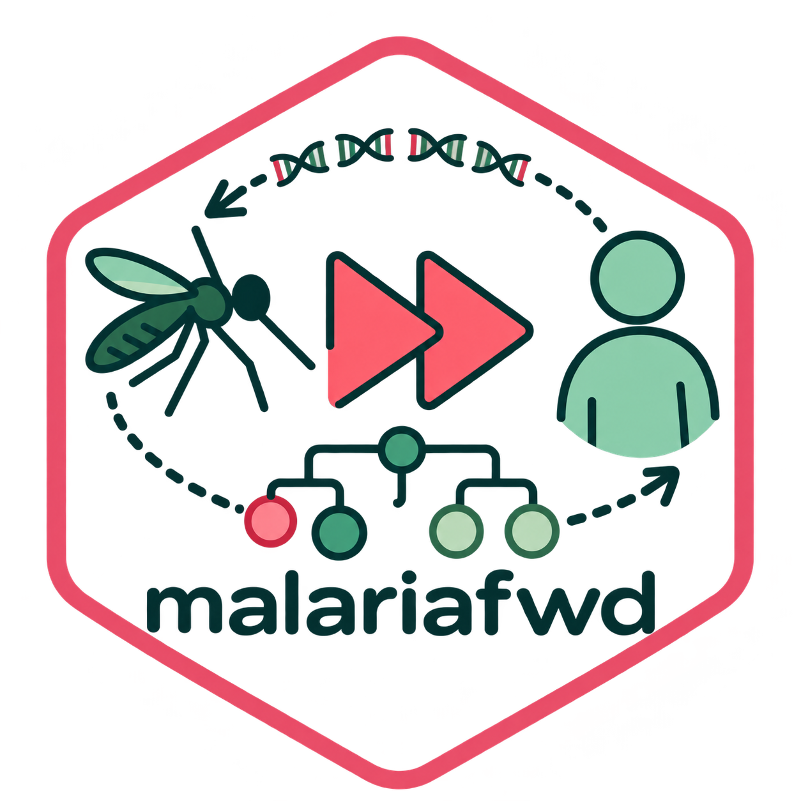

Who infected whom: the ground-truth transmission links
Source:R/transmission.R
transmission_links.RdOne row per link from a parent genome of an oocyst to a genome the oocyst's products infected. A mosquito takes up gametes of one genome of the host it feeds on, or of two that it outcrosses, as an oocyst, and a later bite delivers the oocyst's products to another host. The link is direct when the bite starts a blood-stage infection, and liver when the bite leaves a hypnozoite batch: each relapse of the batch is linked to the genomes the mosquito took up.
Usage
transmission_links(events, kind = c("all", "direct", "liver"))Arguments
- events
an events table from
load_events(), or a run (avivax_runor its directory).- kind
"all","direct"or"liver".
Value
a data.table, one row per (source genome, target genome), by target_tick,
target_pedigree_id and source_pedigree_id: source_pedigree_id (the infector genome),
target_pedigree_id (the infected genome), kind ("direct" or "liver"),
source_human_id (the host the mosquito fed on), target_human_id (the host it bit),
mosq_id, oocyst_id, source_tick (the day the source's blood stage began), uptake_tick
(the feed), inoculation_tick (the bite), target_tick (the bite, or for a liver link the
relapse), weight (1, or 1/2 for each parent of an outcrossed oocyst), chain_id and
chain_size. Ids, days and chains are integer.
Details
Only local infections are targets. Imports, founders, the relapses of an import's batch and
recrudescences never are, though each can be a source. A host's own relapse is never linked to
its earlier infection, since no mosquito passes it on, but a mosquito that feeds on a host and
later bites the same host makes a link like any other. Each parent of an outcrossed oocyst is
linked with weight 1/2 and every other link has weight 1, so a target's weights sum to 1;
unique(links, by = "target_pedigree_id") gives one row per infected genome with the host that
infected it. Join classify_cases() on target_pedigree_id = pedigree_id for a target's
detection and whether a relapse was masked.
Chains. chain_id numbers the chains of transmission, the connected components of the
links returned, each taken in either direction, in the order of their first link; chain_size
counts a chain's genomes, founders included, a recrudescence counted as the clone it came from.
The chains follow kind. An outcrossed oocyst joins its two parents' chains, and a genome with
no link is in no chain. In an endemic run seeded with founders most genomes end in a few large
chains: chain sizes describe separate introductions only where chains stay apart, as at low
transmission sustained by imports. A chain still growing at the end of the run is cut there.
Pass the whole event log, as load_events() gives it, and filter the result: a link needs the
rows of the feed, the bite and the source's onset, which can lie long before its target.
Examples
links <- transmission_links(example_run())
table(links$kind)
#>
#> direct liver
#> 148 169
unique(links[, .(chain_id, chain_size)]) # one row per chain
#> chain_id chain_size
#> <int> <int>
#> 1: 1 224
#> 2: 2 3
#> 3: 3 2
#> 4: 4 2
#> 5: 5 10
#> 6: 6 5
#> 7: 7 3
#> 8: 8 10